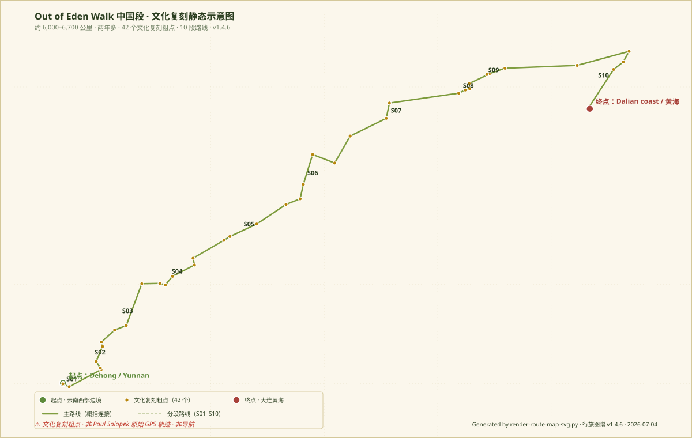

把行旅图谱中的人文路线沉淀为可下载、可审校、可复用的数据资产。
CSV / GeoJSON / GPX 三种格式 · 纯静态 · 长期可维护
Excel / Numbers / Pandas · 字段化数据 · 适合统计与可视化
QGIS / geojson.io / Leaflet / Mapbox · Point + LineString · 静态嵌入
Google Earth / GPX Viewer · 仅作粗略 waypoint · 不作导航
v1.4.5 · 50% · 文化复刻粗点 · 42 个点位 · 10 段路线
从滇西边境到大连黄海，沿 Paul Salopek 的慢新闻足迹，穿越茶马古道、蜀道、黄土高原、北京、长城与东北海岸。

未来 Phase 6 将逐步补足其他路线的 CSV / GeoJSON / GPX 数据
北京出发 · 9 天 8 晚闭环自驾 · 辽塔 / 契丹 / 捺钵 / 五京制度
11 天 10 晚 · 山西古建 · 云冈 / 应县木塔 / 佛光寺 / 南禅寺 / 晋祠
v1.4.6 新增 · 统一字段定义 · 为未来辽塔巡礼 / 山西古建等路线复用同一规范
当前路线数据统一使用 CSV / GeoJSON / GPX 三格式。每个点位必须包含以下字段：
segment_id · 段落编号（S01–S10）source_level · 来源等级（A_official_oedw / B_partner_or_education / C_chinese_media / D_reconstructed_for_travel）coordinate_precision · 坐标精度（city / landmark / region / approximate / unknown）replication_feasibility · 复刻可行性（high / medium / low / not_recommended / reading_only）risk_note · 风险提示所有格式 metadata / desc 中必须明确标注：非 Paul Salopek 原始 GPS 轨迹 + 非导航。
v1.4.6 新增 · 从原始数据到页面展示的完整流程
CSV / GeoJSON / GPX → validate-route-data.py 校验 → render-route-map-svg.py 生成静态 SVG → 页面读取 GeoJSON 展示数据表
路线数据是行旅图谱项目中"可审校、可复用、可沉淀"的部分。我们相信：
详细字段说明、数据限制、使用方法见 data/routes/README.md。